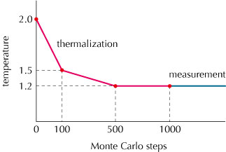

The ALPS/looper package is one of the applications of the ALPS Project. The ALPS/looper is the successor of the Looper Library version 2, which is the Fortran 90 library for quantum Monte Carlo method.
The ALPS/looper application provides multi-cluster quantum Monte Carlo algorithms for generic spin systems in the path-integral or SSE representations. it supports generic spin models with arbitrary spin size S on arbitrary lattices. The supported interactions are
Since it supports so-called freezing graphs, models with easy-axis (Ising-like) anisotropy can also be simulated very efficiently.
From version 4, it includes non-trivial hybrid parallelization by using MPI and OpenMP, which has been tested on several state-of-the-art supercomputers (The K Computer, T2K Open Supercomputers, SGI Altix, etc).
A stripped version of the ALPS/looper is distributed as a part of ALPS. The full version of ALPS/looper library (including test suites, etc) is available from http://wistaria.comp-phys.org/alps-looper/.
Note: This section applies only for the full version of ALPS/looper.
cmake -DCMAKE_INSTALL_PREFIX=$ALPS_HOME $LOOPER_SRC_DIR make
where $ALPS_HOME denotes the top directory in which the ALPS package is installed, $LOOPER_SRC_DIR is the directory where the source code of the ALPS/looper is located.
CMake accepts the following configuration options:
| Name | Default value | Descriptin |
| LOOPER_BUILD_TESTS | ON | Build looper tests |
| LOOPER_BUILD_EXTRAS | OFF | Build in extras subdirectory |
| LOOPER_ENABLE_DIAG | ON | Enable exact diagonalization method |
| LOOPER_ENABLE_ISING | ON | Enable Swendsen-Wang algorithm for classical Ising model |
| LOOPER_ENABLE_PI | ON | Enable loop algorithm in path integral reprentation |
| LOOPER_ENABLE_SSE | ON | Enable loop algorithm in high-temperature expansion representation |
| LOOPER_ENABLE_OPENMP | ON | OpenMP (hybrid parallelization) support |
| LOOPER_ENABLE_TIMER | OFF | Perform time measurement of each section |
| LOOPER_TIMER_TRACE | OFF | Turn on debug trace output of timer |
| LOOPER_TIMER_DETAILED | OFF | Turn on detailed timer report |
Note: OpenMP (and hybrid parallelization) support will be enabled only if the ALPS library has been configured with ALPS_ENABLE_OPENMP=ON and ALPS_ENABLE_OPENMP_WORKER=ON.
ctest
| Option | Default value | Descriptin |
| -h [ --help ] | produce help message | |
| -l [ --license ] | print license conditions | |
| --auto-evaluate | true | evaluate observables upon halting [default = true] |
| --check-parameter | perform parameter checking | |
| --check-interval arg | 100 | time between internal status check [unit = millisec; default = 100ms] |
| --checkpoint-interval arg | 3600 | time between checkpointing [unit = sec; default = 3600s] |
| --evaluate | only perform evaluation | |
| --mpi | run in parallel using MPI | |
| --Nmin | [obsolete] | |
| --Nmax | [obsolete] | |
| --no-evaluate | prevent evaluating observables upon halting | |
| --report-interval arg | 600 | time between progress report of clones [unit = sec; default = 600s] |
| -T [ --time-limit ] arg | unlimited | time limit for the simulation [unit = sec; defulat = no time limit] |
| --Tmin | [obsolete] | |
| --Tmax | [obsolete] | |
| -p [ --threads-per-clone ] arg | 1 | number of threads for each clone [default = 1] |
| -r [ --total-threads ] arg | # of MPI processes | total number of threads [integer or 'auto'; default = total number of processes] |
| --input-file arg | input master XML files |
| Name | Default Value | Description |
| NUM_CLONES | 1 | number of clones |
| LATTICE_LIBRARY | $PREFIX/lib/xml/lattices.xml | path to a file containing lattice descriptions |
| LATTICE | none | name of the lattice |
| MODEL_LIBRARY | $PREFIX/lib/xml/models.xml | path to a file containing model descriptions |
| MODEL | none | name of the model |
| ALGORITHM | none | type of algorithm ("loop", "loop; path integral", "loop; sse", "ising", or "diagonalization"); |
| T | none | temperature |
| T_START_# | undefined | [optional] see Temperature Annealing. |
| T_DURATION_# | undefined | [optional] see Temperature Annealing. |
| SWEEPS | 65536 | Monte Carlo steps after thermalization |
| THERMALIZATION | 8192 | Monte Carlo steps for thermalization |
| USE_SITE_INDICES_AS_TYPES | false | if true, all sites will have distinct site types, which are identical to site indices (starting from 0). |
| USE_BOND_INDICES_AS_TYPES | false | if true, all bonds will have distinct bond types, which are identical to bond indices (starting from 0). |
| PARTITION | none | [parallel] list of number of processes (separated by colons) used in each stage of cluster unification (e.g. 2:3:3:2). The product of all the factors should be equal to the total number of processes for each clone. |
| DUPLEX | true | [parallel] if true, bidirectional communication is enabled. |
| MEASURE[Correlations] | false | if true, correlation function will be calculated |
| MEASURE[Green Function] | false | if true, Green's function will be calculated |
| INITIAL_SITE | undefined | initical site from which correlation function and Green's function are measured. If not defined, correlation between all possible site pairs will be calculated |
| MEASURE[Local Susceptibility] | false | if true, local suscepbility and local magnetization will be calculated |
| MEASURE[Structure Factor] | false | if true, structure factor for all possible k-values will be calculated |
| DISABLE_IMPROVED_ESTIMATOR | false | [optional] use normal (i.e. unimproved) estimator for measurements (will be set to true automatically in the presence of longitudinal magnetic field) |
| FORCE_SCATTER | 0 | [optional] minimum probability for forward scattering graph (will be set to 0.1 automatically for classically frustrated models in order to ensure the ergodicity |
| LOOPER_DEBUG[MODEL OUTPUT] | undefined | if defined, all the coupling constants will be printed out to standard output (cout) before calculation. If the value is cerr, the output will be made for standard error (cerr). |
Note: when PARTITION is not specified, the number of MPI processes per clone should be factorable by 2, 3, 5, 7, 11, and 13.
In addition, the lattice/model descriptions can require further parameters (e.g. L or W) as specified in the lattice (model) description file.
Some models (typically models with competing interactions) have very long equilibration time. In such cases, one might want to lower the temperature slowly during the thermalization steps. Such temperature annealing process can be specified by using the parameters T_START_# and T_DURATION_# (# = 0, 1, 2,...), where T_START_# and T_DURATION_# specify the starting temperature and the duration of the # th block, respectively.
For example the protocol shown in the above figure can be realized by specifing the following parameter set.
T_START_0 = 2.0; T_DURATION_0 = 100; T_START_1 = 1.5; T_DURATION_1 = 400; THERMALIZATION = 1000; T = 1.2;
Note that the sum of T_DURATION_#'s must be less than or equal to THERMALIZATION.
The following observables are measured by the loop application:
| Name | Description |
| Energy | total energy |
| Energy Density | energy per spin |
| Energy^2 | square of total energy |
| Specific Heat | specific heat |
| Stiffness | stiffness constant |
| Magnetization | total uniform magnetization |
| Magnetization^2 | square of total uniform magnetization |
| Magnetization^4 | 4th power of total uniform magnetization |
| Binder Ratio of Magnetization | Binder ratio of uniform magnetization |
| Magnetization Density | uniform magnetization per spin |
| Magnetization Density^2 | square of uniform magnetization per spin |
| Magnetization Density^4 | 4th power of uniform magnetization per spin |
| Susceptibility | uniform susceptibility |
| Staggered Magnetization | total staggered magnetization [1] |
| Staggered Magnetization^2 | square of total staggered magnetization [1] |
| Staggered Magnetization^4 | 4th power of total staggered magnetization [1] |
| Staggered Magnetization Density | staggered magnetization per spin [1] |
| Staggered Magnetization Density^2 | square of staggered magnetization per spin [1] |
| Staggered Magnetization Density^4 | 4th power of staggered magnetization per spin [1] |
| Staggered Susceptibility | staggered susceptibility [1] |
| Generalized Magnetization | total generalized magnetization [2] |
| Generalized Magnetization^2 | square of total generalized magnetization [2] |
| Generalized Magnetization^4 | 4th power of total generalized magnetization [2] |
| Generalized Binder Ratio of Magnetization | Binder ratio of generalized magnetization [2] |
| Generalized Magnetization Density | generalized magnetization per spin [2] |
| Generalized Magnetization Density^2 | square of generalized magnetization per spin [2] |
| Generalized Magnetization Density^4 | 4th power of generalized magnetization per spin [2] |
| Generalized Susceptibility | generalized susceptibility [2] |
| Generalized Staggered Magnetization | total generalized staggered magnetization [1] [2] |
| Generalized Staggered Magnetization^2 | square of total generalized staggered magnetization [1] [2] |
| Generalized Staggered Magnetization^4 | 4th power of total generalized staggered magnetization [1] [2] |
| Generalized Staggered Magnetization Density | generalized staggered magnetization per spin [1] [2] |
| Generalized Staggered Magnetization Density^2 | square of generalized staggered magnetization per spin [1] [2] |
| Generalized Staggered Magnetization Density^4 | 4th power of generalized staggered magnetization per spin [1] [2] |
| Generalized Staggered Susceptibility | generalized staggered susceptibility [1] [2] |
| Spin Correlations | correlation functions [3] |
| Staggered Spin Correlations | staggered correlation functions [1] [3] |
| Generalized Spin Correlations | generalized correlation functions [2] [3] |
| Generalized Staggered Spin Correlations | generalized staggered correlation function [1] [2] [3] |
| Green's Function | Green's function [2] [4] |
| Structure Factor | static structure factor [5] |
| Local Magnetization | local magnetization [6] |
| Local Susceptibility | local susceptibility (i.e., response of uniform magnetization against local magnetic field or that of local magnetization against uniform magnetic field) [6] |
| Staggered Local Susceptibility | statggered local susceptibility (i.e., response of staggered magnetization against local magnetic field or that of local magnetization against staggered magnetic field) [1] [6] |
| Local Field Susceptibility | local-field susceptibility (i.e., response of local magnetization against local magnetic field) [6] |
| [1] | (1, 2, 3, 4, 5, 6, 7, 8, 9, 10, 11, 12, 13, 14, 15, 16, 17) measured only for bipartite lattices |
| [2] | (1, 2, 3, 4, 5, 6, 7, 8, 9, 10, 11, 12, 13, 14, 15, 16, 17, 18) measured only by improved estimator |
| [3] | (1, 2, 3, 4) set MEASURE[Correlations] to true |
| [4] | set MEASURE[Green Function] to true |
| [5] | set MEASURE[Structure Factor] to true |
| [6] | (1, 2, 3, 4) set MEASURE[Local Susceptiblity] to true |
A few remarks concerning the generalized susceptibilities: The general idea is that the uniform generalized susceptibility is the susceptibility for the magnetic order supposed to be stronger. The staggered generalized susceptibility is the staggered susceptibility of this specific order. To be more precise, we have the following correspondance:
| Model | Generalized Susceptibility | Generalized Staggered Susceptibility |
| Ferromagnetic model with Ising anisotropy (in the Z axis) | uniform Z-Z susceptibility | staggered Z-Z susceptibility<br> |
| Ferromagnetic model (Heisenberg point) | uniform Z-Z (or X-X) susceptibility | staggered Z-Z (or X-X) susceptibility |
| Ferromagnetic model with XY anisotropy (in the XY plane) | uniform X-X susceptibility | staggered X-X susceptibility |
| Antiferromagnetic model with XY anisotropy (in the XY plane) | staggered X-X susceptibility | uniform X-X susceptibility |
| Antiferromagnetic model (Heisenberg point) | staggered Z-Z (or X-X) susceptibility | uniform Z-Z (or X-X) susceptibility |
| Antiferromagnetic model with Ising anisotropy (in the Z axis) | staggered Z-Z susceptibility | uniform Z-Z susceptibility |
Same considerations apply for the uniform and staggered magnetization to the square.
ALPS/looper tutorials can be found in ALPS Tutorials Page.
The license allows the use of the applications for non-commercial scientific use provided that the use of the ALPS/looper Library and the ALPS Libraries is acknowledged, and the papers listed below are referenced in any scientific publication. For detail please see the ALPS Applications Licence.
can be addressed to Synge Todo <wistaria@comp-phys.org>.
I wish to thank M. Troyer and F. Alet for many useful comments and suggestions. The development of ALPS/looper version 4 was supported by Grand Challenges in Next-Generation Integrated Nanoscience, Next-Generation Supercomputer Project, MEXT, Japan.
Copyright (c) 1997-2012 by Synge Todo <wistaria@comp-phys.org>